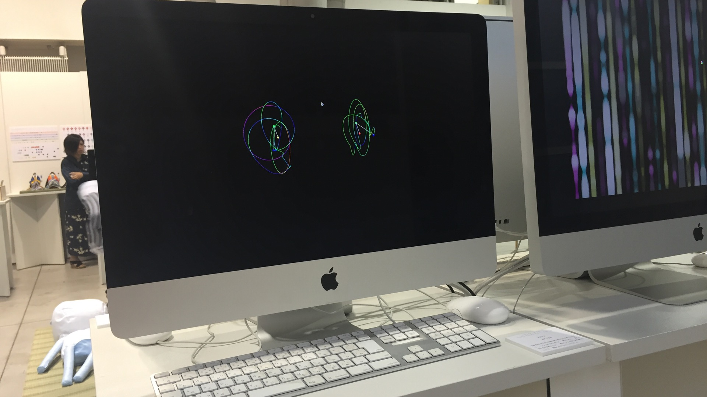
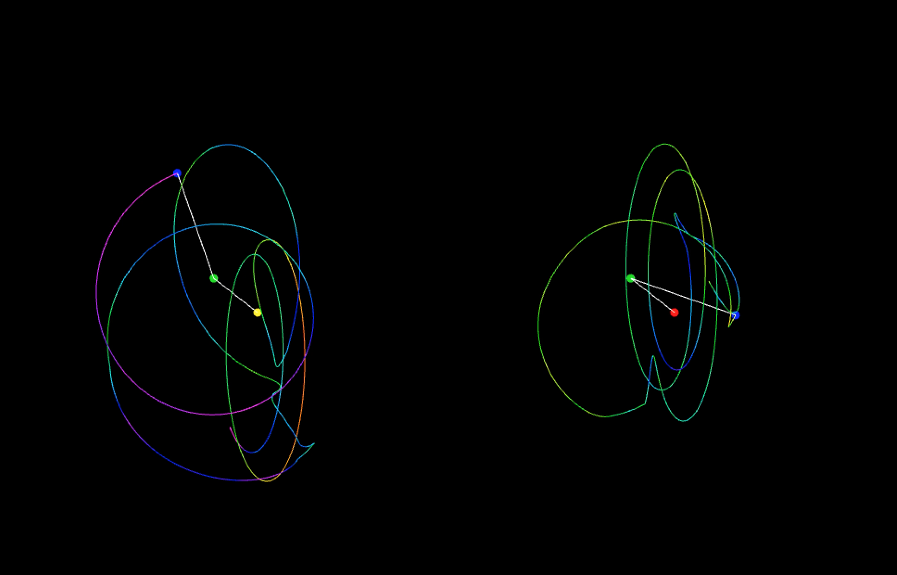
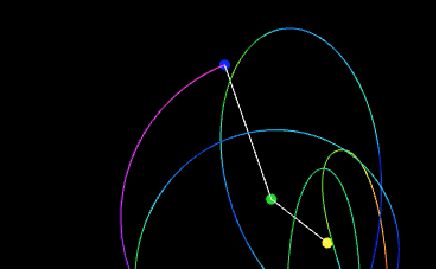

Mind and Body Visualization
はい
PRODUCT MOVIE
ABOUT
| 対応ディバイス | PC |
|---|---|
| 使用ツール | Xcode, openFrameworks |
| 使用言語 | C++ |
| 役割 | 立案, コンセプト, デザイン, コーディング |
| 制作期間 | 2016年6-7月 |
| 制作人数 | 1人 |
| その他の技術 | JINS MEME |

MISSION
なし。
ただし、制作プロセスの中のどこかでプログラミングを使え。


PRODUCT DESCRIPTION
近い環境の学生2人の心と体の動きのデータをJINS MEMEで取得し、可視化しました。
近い環境の2人の動きが異なるなら、遠い環境の人や体の動き・価値観が違うのは当たり前ではないでしょうか。
なんとなく認識している人と人との違いを可視化し、具体化することで、より自分ごとにしてほしいと思い、この作品を制作しました。
色や形には以下のような意味があります。
| 時 | 回転する時は、流れる時間を示しています。経過した時間の心と体の変化に合わせて線が変化します。 |
|---|---|
| 色 | 精神の集中度を示しています。精神が集中している時ほど、色の変化が少なくなります。集中度はJINS MEMEで取得した値を用いています。 |
| 回転 | 姿勢の動きを示しています。姿勢の動きが活発な時ほど、大きく回転して線を描きます。 |
| 球体 | 地球の形を意味しています。近い環境の2人から、地球にいる人々まで視野を広げてほしいと思い、地球を暗示させるデザインにしました。 |
| 3次元 | 多面的に見ることを促しています。人や物事は、見る角度によって、違う一面が浮かび上がってきます。違いに気づき、認めるためには、多面的に見ることが大切だと思います。 |
| 線が2つ | 2つ並べることで、見た人が比較し、違いに気付くことを促しています。 |